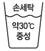

세탁기능사 (2011-04-17 기출문제)
1과목: 세정이론
1. 클리닝에 사용되고 있는 원통보일러의 형식에 해당되지 않는 것은?
- 폐열
- 노통
- 입식
- 연관
(정답률: 92%)

2. 세탁에 사용하는 물의 장점으로 틀린 것은?
- 용해성이 우수하다.
- 인화성이 없다.
- 표면장력이 양호하다.
- 비열과 증발열이 크다.
(정답률: 62%)
3. 오점의 부착 상태 중 화학결합에 의한 부착의 설명으로 옳은 것은?
- 섬유 중 면, 레이온, 모, 견에서 화학 결합하는 경우가 많다.
- 오염입자가 기름의 엷은 막을 통해서 섬유에 부착된 것이다.
- 강한 분자 간의 인력으로 인하여 쉽게 제거가 되지 않는다.
- 오염 입자가 침전하여 피복의 표면에 부착된 것이다.
(정답률: 69%)
4. 탱크에 있는 용제가 펌프 기능이 양호한 액심도 3까지 도달하는 소요시간은?
- 45초 이내
- 45~60초
- 60~120초
- 120초 이상
(정답률: 92%)
5. 석유계 용제의 단점이 아닌 것은?
- 세정력이 약하다.
- 인화에 의한 폭발이나 화재의 위험이 있다.
- 의류에 냄새가 남을 수 있다.
- 독성이 약하고 값이 싸다.
(정답률: 72%)
6. 유기용제 중 달콤한 자극성 냄새를 띤 무색 액체로서 유지·수지류에 대한 용해력이 가장 우수한 것은?
- 클로로벤젠
- 메틸알코올
- 에틸에테르
- 아세톤
(정답률: 54%)
7. 다음 중 흡착제이면서 탈색력이 뛰어난 청정제는?
- 여과제
- 활성탄소
- 경질토
- 알루미나겔
(정답률: 60%)
8. 용제의 세척력을 결정해 주는 요소가 아닌 것은?
- 농도
- 비중
- 용해력
- 표면장력
(정답률: 69%)
9. 다음 중 오염제거가 가장 까다로운 섬유는?
- 양모
- 마
- 아세테이트
- 견
(정답률: 79%)
10. 살충력은 크지 않으나 벌레가 그 냄새를 기피하게 되어 방충 효과를 나타내는 방충제는?
- 나프탈렌
- 실리카겔
- 염화칼슘
- 과산화수소
(정답률: 89%)
11. 보일러 사용 시 온도 99.1℃에서의 증기압은?
- 1kg/cm2
- 2kg/cm2
- 3kg/cm2
- 4kg/cm2
(정답률: 94%)
12. 석유계 용제의 클리닝 처리방법에 대한 설명으로 틀린 것은?
- 비중이 높아 견과 같이 약하고 섬세한 의류의 드라이클리닝에 적합하다.
- 세정시간은 소프의 세정작용이 골고루 미치는 20~30분이 적합하다.
- 온도가 높으면 화재의 위험이 있어 방 폭설비를 갖추어야 한다.
- 가연성이며 용해력이 약하다.
(정답률: 51%)
13. 수용성 오점 제거 방법으로 틀린 것은?
- 일반적으로 묻은 즉시에는 물만으로도 제거된다.
- 석유계 용제 또는 합성 용제를 사용한다.
- 시간이 경과한 것은 물과 알칼리성 또는 중성세제로 제거될 수 있다.
- 너무 오래된 것은 공기 중에서 변질, 고착되므로 표백 처리가 필요할 수도 있다.
(정답률: 66%)
14. 마찰이나 물리적 작용으로 직접 오염이 부착하거나 중력 등에 의하여 오염 입자가 침전하여 피복의 표면에 부착되는 오점의 부착 상태는?
- 정전기에 의한 부착
- 기계적 부착
- 화학결합에 의한 부착
- 분자 간 인력에 의한 결합
(정답률: 72%)
15. 다음 중 재오염의 원인이 아닌 것은?
- 부착
- 흡착
- 염착
- 접착
(정답률: 72%)
16. 세탁물 접수 시 확인해야 할 사항이 아닌 것은?
- 얼룩의 부착시기
- 의복의 파손 여부
- 클리닝의 대상 여부
- 의복의 잔존가치 여부
(정답률: 66%)
17. 비누가 해당되는 계면활성제는?
- 음이온 계면활성제
- 양이온 계면활성제
- 양성계면활성제
- 비이온 계면활성제
(정답률: 89%)
18. 워싱 서비스(Washing Service)의 가장 기본적인 서비스에 해당되는 것은?
- 청결 서비스
- 보전 서비스
- 패션성 제공
- 기능성 부여
(정답률: 85%)
19. 다음 중 세탁 시 가장 알맞은 세탁용수는?
- 연수
- 경수
- 해수
- 지하수
(정답률: 84%)
20. 염소계 표백제인 아염소산나트륨으로 표백하기에 부적합한 섬유는?
- 셀룰로스 섬유
- 단백질 섬유
- 폴리에스테르
- 아크릴
(정답률: 61%)
2과목: 기술관리
21. 다림질 방법의 설명으로 틀린 것은?
- 광택을 필요로 하는 옷은 다리미판을 딱딱한 것으로 사용한다.
- 풀먹인 직물은 너무 고온처리하면 황변할 수 있다.
- 다림질은 나가는 방향의 앞쪽에 힘을 주어야 잔주름이 생기지 아니한다.
- 색깔이 있는 직물은 변색 여부를 살핀다.
(정답률: 76%)
22. 론드리 기계 종류의 설명으로 옳은 것은?
- 텀블러 - 많은 수의 작은 구멍이 있는 내통을 고속으로 회전시켜 물을 털어낸다.
- 원심탈수기 - 열풍을 불어 넣으면서 내통을 회전시켜서 건조하는 기계이다.
- 와셔 - 마무리 다림질한 물품을 접어 넣는 기계이다.
- 면 프레스기 - 캐비넷형과 시어즈형이 있다.
(정답률: 60%)
23. 물리적 얼룩빼기 방법이 아닌 것은?
- 기계적 힘을 이용하는 방법
- 분산법
- 표백제법
- 흡착법
(정답률: 72%)
24. 웨트클리닝에서 주의해야 할 점이 아닌 것은?
- 세탁 전에 색빠짐, 형태변형, 수축성 여부를 조사한다.
- 수축되기 쉬운 것은 치수를 재어 놓는다.
- 색이 빠지기 쉬운 것은 한 점씩 뺀다.
- 핸드백은 용제나 물에 담구어 처리한다.
(정답률: 83%)
25. 센물을 단물로 바꾸는 방법으로 가정에서 쉽게 할 수 있는 것은?
- 이온 교환 수지법
- 끓이는 법
- 산을 가하는 법
- 알칼리를 가하는 법
(정답률: 83%)
26. 클리닝 처리를 하기 전 우선적으로 점검해야 할 사항이 아닌 것은?
- 섬유의 조직
- 가공의 유무
- 클리닝 처리방법
- 천의 구조
(정답률: 56%)
27. 유용성 오점을 제거하는 방법으로 틀린 것은?
- 석유계 용제 또는 합성 용제를 사용한다.
- 일반적으로 묻은 즉시 물만으로 제거한다.
- 오점을 용해시켜 밑의 깔개천으로 이동시켜 흡수시킨다.
- 수용성 잔류물은 물과 세제로 처리한다.
(정답률: 64%)
28. 재료의 성분에 따라 벤젠을 묻혀서 닦아 주거나 알코올을 묻혀서 닦아 주면 말끔히 제거할 수 있는 얼룩은?
- 혈액
- 우유
- 접착제
- 싸인펜
(정답률: 76%)
29. 다림질의 3대 요소가 아닌 것은?
- 온도
- 압력
- 시간
- 수분
(정답률: 93%)
30. 기름에 대한 용해도가 적정하고 안정적이며, 휘발성도 적정하여 드라이클리닝 용제로서 널리 사용되는 것은?
- 퍼클로로에틸렌
- 불소계 용제
- 석유계 용제
- 트리클로로에틸렌
(정답률: 86%)
31. 약한 처리의 물세탁으로 까다로운 의류를 물세탁하기 위한 고급 세탁 방법은?
- 드라이클리닝
- 론드리
- 와셔
- 웨트클리닝
(정답률: 74%)
32. 드라이클리닝 마무리기계 중 폼모형에 해당되는 것은?
- 만능프레스
- 인체프레스
- 스팀보드
- 스팀박스
(정답률: 84%)
33. 주로 유럽에서 사용되고 있는 형식으로 액량비가 적어야 하고 저포성 세제를 사용하는 세탁기는?
- 교반식 세탁기
- 드럼식 세탁기
- 이조식 수동세탁기
- 일조식 전자동세탁기
(정답률: 83%)
34. 다음 중 론드리용 기계 형태가 아닌 것은?
- 사이드로딩(Side Loading) 형
- 킬달(Kieldahl) 형
- 워셔(Washer) 형
- 엔드로딩(End Loading) 형
(정답률: 79%)
35. 론드리의 장점으로 틀린 것은?
- 세탁온도가 높아 세탁효과가 좋다.
- 알칼리제를 사용하므로 오점이 잘 빠진다.
- 마무리에 상당한 시간과 기술이 필요 없다.
- 표백이나 풀먹임이 효과적이며 용이하다.
(정답률: 83%)
36. 처리 시간이 짧고, 부드러우며, 색은 청색이어서 원하는 색으로 염색할 수 있어 의복재료로 사용하는 피혁 제조 방법은?
- 크롬법
- 탄닌법
- 명반법
- 기름법
(정답률: 80%)
37. 섬유의 물세탁방법에 관한 표시기호에 대한 설명으로 틀린 것은?

- 물의 온도는 30℃를 표준으로 한다.
- 약하게 손세탁할 수 있다.
- 세탁기로 세탁할 수 있다.
- 세제는 중성세제를 사용한다.
(정답률: 87%)
38. 실의 번수에 대한 설명으로 틀린 것은?
- 실의 굵기를 나타내는 수치이다.
- 항중식 번수, 항장식 번수, 공통식 번수 등으로 구분하고 있다.
- 이온교환수지에 실의 굵기를 통과시 키는 방법으로 구분한다.
- 공통식 번수는 필라멘트사, 방적사 모두 사용한다.
(정답률: 64%)
39. 견섬유에 대한 설명 중 틀린 것은?
- 단백질 섬유이다.
- 다른 섬유에 비하여 내일광성이 우수하다.
- 알칼리에 약해서 강한 알칼리에 의하여 쉽게 손상된다.
- 곰팡이 등의 미생물에 대해서는 비교적 안정하다.
(정답률: 64%)
40. 다음 중 개버딘이 해당되는 직물 조직은?
- 평직
- 능직
- 수자직
- 익조직
(정답률: 84%)
3과목: 클리닝대상품
41. 피혁의 결점에 대한 설명으로 틀린 것은?
- 열에 약해서 55℃ 이상에서는 굳어지고 수축된다.
- 인장, 굴곡, 마찰에 견디기 어렵다.
- 염색견뢰도가 나빠서 일광에 의해 퇴색되기 쉽다.
- 곰팡이가 생기기 쉽다.
(정답률: 58%)
42. 부직포 심지의 특성으로 틀린 것은?
- 직물 심지에 비해 가볍다.
- 직물 심지에 비해 건조가 잘되고 구김이 덜 생긴다.
- 드라이클리닝에 의해 재오염되기 쉬운 성질을 갖고 있다.
- 접착 심지의 경우 다림질을 했을 때 표면에 수지가 새어 나오지 않는다.
(정답률: 50%)
43. 면섬유의 성질로 옳은 것은?
- 산에 강하다.
- 알칼리에 강하다.
- 탄성이 좋다.
- 열에 대단히 약하다.
(정답률: 76%)
44. 합성섬유에 대한 설명 중 옳은 것은?
- 합성섬유는 여러 가지 종류가 있으나 세탁의 성질은 똑같으므로 주의할 필요가 없다.
- 합성섬유는 열가소성이 크고 열에 약하다.
- 합성섬유는 일반적으로 유성오염에 예민하나 피지 등에는 오염되지 않는다.
- 합성섬유는 세탁 시 고온건조 처리를 하여도 변형이 일어나지 않는다.
(정답률: 64%)
45. 섬유의 분류에서 천연섬유에 해당되지 않는 것은?
- 셀룰로스 섬유
- 단백질 섬유
- 광물성 섬유
- 재생 섬유
(정답률: 65%)
46. 셀룰로스 섬유를 반응성 염료로 염색할 때 일어나는 섬유와 염료와의 결합 현상은?
- 공유결합
- 배위결합
- 수소결합
- 반데르발스결합
(정답률: 72%)
47. 면섬유의 중공에 대한 설명 중 틀린 것은?
- 미성숙한 섬유에 발달되어 있다.
- 제2차 세포막의 안층이다.
- 보온성이 좋다.
- 전기절연성이 크다.
(정답률: 53%)
48. 염색 견뢰도에 대한 설명 중 틀린 것은?
- 옷이 염색된 염료가 일광이나 세탁, 기타 여러 가지 처리에 견디는 능력을 견뢰도라 한다.
- 견뢰도는 염료의 종류에 따라 각각 다르다.
- 견뢰도 판정은 오염을 판정할 때 사용되는 표백색표에 비교한다.
- 견뢰도의 등급 숫자가 낮을수록 견뢰도가 우수하다.
(정답률: 75%)
49. 다음 중 클리닝 대상품이 아닌 것은?
- 인테리어 제품
- 피혁
- 모피
- 물세탁
(정답률: 66%)
50. 양모의 축융성을 이용하여 만든 피륙은?
- 부직포
- 레이스
- 편성물
- 펠트
(정답률: 76%)
51. 섬유제품의 표시에서 방모제품의 경우 혼용율 허용 공차는?
- 1%
- 3%
- 5%
- 7%
(정답률: 70%)
52. 다음 합성섬유 중 성질이 틀린 것은?
- 폴리에스테르 - 내약품성이 좋다.
- 아크릴 - 내일광성이 좋다.
- 나일론 - 탄성회복률이 크다.
- 폴리프로필렌 - 흡습성이 크다.
(정답률: 66%)
53. 다음 중 섬유의 분류가 틀린 것은?
- 식물성 섬유 - 마
- 동물성 섬유 - 견
- 재생섬유 - 비스코스레이온
- 광물성 섬유 - 양모
(정답률: 86%)
54. 면섬유의 염색에 가장 많이 사용되는 염료는?
- 산성 염료
- 분산 염료
- 염기성 염료
- 반응성 염료
(정답률: 64%)
55. 염료, 조제 그리고 호료를 배합한 날염호로 직물의 표면에 무늬를 날인한 후 증기로 쪄서 염료를 섬유의 내부까지 침투·염착시키는 염색법은?
- 착색발염법
- 발염법
- 직접날염법
- 방염법
(정답률: 76%)
4과목: 공중위생법규
56. 공중위생감시원의 자격·임명·업무범위 기타 필요한 사항은 어느 령으로 정하는가?
- 대통령령
- 국무총리령
- 도지사령
- 보건복지부장관령
(정답률: 73%)
57. 공중위생영업을 하고자 하는 자가 보건복지부령이 정하는 중요사항을 변경신고를 하지 않았을 때의 벌칙은?
- 1년 이하의 징역 또는 300만 원 이하의 벌금
- 6월 이하의 징역 또는 500만 원 이하의 벌금
- 1년 이하의 징역 또는 1천만 원 이하의벌금
- 1년 이하의 징역 또는 500만 원 이하의 벌금
(정답률: 60%)
58. 위생서비스수준의 평가에 대한 설명으로 틀린 것은?
- 시·도지사는 공중위생영업소의 위생 관리수준을 향상시키기 위하여 위생 서비스 평가계획을 수립한다.
- 시장·군수·구청장은 평가계획에 따라 관할지역별 세부 평가계획을 수립한 후 공중위생 영업소의 위생서비스 수준을 평가하여야 한다.
- 위생서비스평가의 전문성을 높이기 위하여 필요하다고 인정하는 경우에 는 관련 전문기관 및 단체로 하여금 위생 서비스 평가를 실시하게 할 수 있다.
- 위생서비스평가의 주기·방법, 위생 관리등급의 기준 기타 평가에 관하여 필요한 사항은 시·도지사령으로 정한다.
(정답률: 56%)
59. 다음 중 공중위생관리법 시행규칙이 해당되는 것은?
- 부령
- 훈령
- 고시
- 예규
(정답률: 76%)
60. 공중위생관리법상 위생교육을 받아야 하는 자에 대한 위생교육의 방법·절차 등에 관하여 필요한 사항은 어느 령으로 정하는가?
- 대통령령
- 보건복지부령
- 국무총리령
- 고용노동부령
(정답률: 73%)